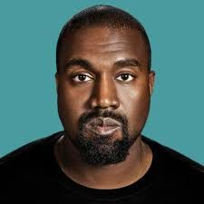

Kanye West
Kanye West, známy aj ako Ye, je jedným z najvýznamnejších a najkontroverznejších hudobníkov a producentov súčasnosti. Narodil sa 8. júna 1977 v Atlante a vyrastal v Chicagu, kde sa formovala jeho vášeň pre hudbu a umenie. Počas svojich začiatkov sa stal slávnym ako producent, ktorý pracoval s množstvom umelcov, než sa rozhodol ísť na sólovú dráhu. Jeho prvý album The College Dropout (2004) bol revolučný, kombinoval rap s gospelovými prvkami, a získal veľkú kritiku aj komerčný úspech. Po The College Dropout nasledovali ďalšie albumy, ktoré potvrdili jeho status hudobného génia. Late Registration (2005) a Graduation (2007) priniesli ešte väčší úspech a prestíž. S každým ďalším albumom, ako 808s & Heartbreak (2008), ktorý zmenil smer rapovej hudby, až po My Beautiful Dark Twisted Fantasy (2010), ktorý je často považovaný za jeho majstrovské dielo, Kanye stále dokazoval, že je pripravený experimentovať a posúvať hranice hudby. V rokoch 2013 a 2015 vydal Yeezus a The Life of Pablo, pričom stále pokračoval v práci s novými zvukmi a inovatívnym prístupom. Jeho albumy často skúmajú témy ako sláva, osobné problémy, a moderná spoločnosť. V roku 2018 vydal Ye a Kids See Ghosts, ktoré boli viac introspektívne a reflektovali jeho vtedy prebiehajúcu osobnú krízu. Kanye sa neobmedzuje len na hudbu; stal sa tiež módnym ikonou. Jeho značka YEEZY sa stala kultovou záležitosťou v oblasti obuvi a odevov, spolupracoval so značkami ako Adidas a vytvoril jeden z najpopulárnejších modelov teniskových topánok, YEEZY Boost. V osobnom živote Kanye prešiel množstvom kontroverzií. V rokoch 2014 až 2020 bol ženatý s Kim Kardashian, s ktorou má štyri deti. Ich rozvod v roku 2021 bol široko medializovaný. Okrem toho bol Kanye viackrát terčom kritiky za svoje vyjadrenia, vrátane incidentov na verejnosti a kontroverzných postojov, ktoré zahŕňali politické komentáre a podpory niektorých kontroverzných osobností. V posledných rokoch sa Kanye rozhodol venovať aj náboženstvu, keď sa stal zástancom kresťanskej viery.
Späť na hlavnú stránku